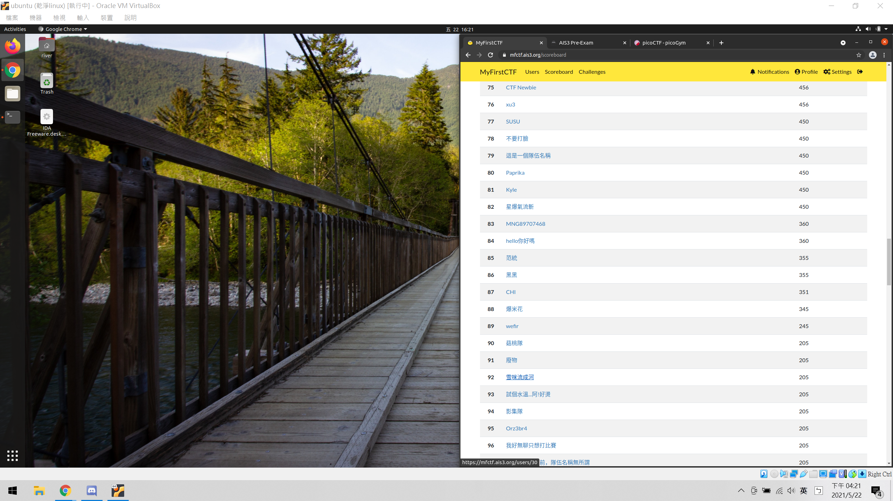
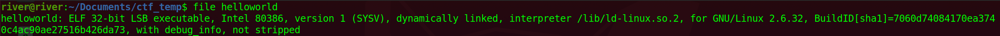

未知的文章
2021.06.01
假日的時候，我和我的男朋友恐龍穿梭在熱鬧的東區。喜歡觀察人群的我，發現熙來攘往的人群中，有許多情侶，都是男友一肩挑起兩個包包。在路中央，我突然扯住恐龍的手：「你願不願意幫我背包包，分擔我的沈重？」 「妳不舒服啊？是不是天氣太熱了？」恐龍摸摸我的額頭，我搖頭。「那麼，一定是妳東西背太多，肩膀痠痛囉？」恐龍掂一掂我肩上的背包，我又搖搖頭。「我的意思是，從今以後，你願不願意出門時都為我背袋子。這無關我舒不舒服，或者包包重不重。」「那，到底是為了什麼？」恐龍百思不解。 「為了愛呀。你看！別人都是這樣的。」我指指路上那些肩上馱了兩個包包的男人。恐龍的臉上，終於露出「我懂了」表情。於是，他二話不說，將我那垂滿流蘇的背包甩到肩後，再將他棗紅色的運動型大背包斜背在身上，左手則拿著剛剛吃剩的薯條和漢堡。最後，他向我伸出右手。(依照慣例，這隻手還是要空出來牽我的手。) 於是，我心滿意足地和他重新上路。但，一路上，我總覺得某些地方怪怪的，像頭重腳輕，或是同手同腳行走一般的失衡和彆扭。「要不要過去看？」經過我最愛的銀飾攤，恐龍捏捏我的手。將喝到一半的可樂放到恐龍空出來的右手，我興奮地擠入人群中。 尋到寶貝，再從人群中擠出來，已經是半個小時以後。東尋西找，左顧右盼著。我突然發現，原本倚在電線桿旁的恐龍不見了。取而代之的，是一個汗流浹背，在背後、肩上、手裡掛滿紙袋和包包，活像是經營另一個活動灘販的男人。那個男人看起來，與其說是我的男朋友，還不如說是我的奴隸。但是，我並不是為了想要一個奴隸，才和這個男人在一起的呀！ 「我自己拿。」我試圖將自已的背包從他的背上搶下來。「怎麼啦？」他一頭霧水地看我。「反正我的包包又不重，我自己背就好了。」我堅持著。「但是、、、、、」恐龍顯然還想要說服我，我馬上接著說：「而且，這個流蘇包包是配合我今天的造型背的。你一個大男生粗手粗腳的，背起來不但醜化了我的背包，還破壞了我的整體感。」 「你確定？」恐龍故意拉住我的背包不放。「我又不是傷殘者，我可以自己來。」一陣拔河後，我將背包搶奪回來。屬於我的重量終於又回到我自己的肩上。 「妳不是說，我幫妳背包包無關袋子重不重，而是關係我愛不愛妳嗎？」恐龍臉上又浮現了那種彷彿知道了什麼的笑意。其實，就是因為愛的關係，我才決定要背我自己的包包。而且，在一陣激烈的搶奪後，我還額外爭取到拿那一袋吃剩的漢堡和薯條的權利。 背著自己的袋子，拎著吃剩的食物，牽著恐龍大大的手。我突然發現，身上能有沈重的感覺，原來，也是一種幸福。

